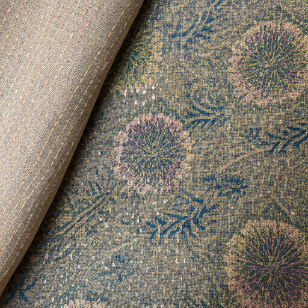

Crafts of Bengal

Nakshi Kantha Embroidery
Origin
Nakshi Kantha, a traditional embroidery craft from Bangladesh and parts of West Bengal, India, has a rich history dating back centuries. Originating in rural Bengal, it was primarily practiced by women in households to create quilts, wraps, and other textiles from discarded fabrics. The name 'Nakshi Kantha' is derived from 'naksha,' meaning artistic patterns, and 'kantha,' referring to the quilted cloth. These intricate embroideries often depict scenes from daily life, folklore, and nature, showcasing the artistic skills and cultural heritage of the region.
Artisan Story
Meet Fatima Begum, a skilled artisan from Jessore, Bangladesh, who has been practicing Nakshi Kantha embroidery for over 20 years. Fatima learned the craft from her mother and grandmother, carrying on a family tradition passed down through generations. Her work is known for its fine detailing and vibrant colors, reflecting her deep connection to the art form and her community. Fatima's creations not only provide her with a livelihood but also help preserve the cultural heritage of Nakshi Kantha.
Authenticity
Each Nakshi Kantha piece sold on our platform is accompanied by a certificate of authenticity, ensuring its origin and craftsmanship. We work directly with artisans like Fatima, verifying their skills and the authenticity of their work. Our platform provides detailed information about the artisan, the materials used, and the story behind each piece, allowing buyers to connect with the craft on a personal level. We are committed to fair trade practices, ensuring that artisans receive fair compensation for their work and that their cultural heritage is respected and valued.